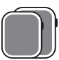
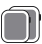
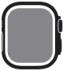

Comparador
Compará los modelos de Apple Watch
Elegí un modelo en cada columna para ver sus diferencias.
Categoría
GPS—
GPS—
—
Resumen

Caja de 45 mm o 41 mmPantalla con diseño de borde a borde
Caja de 44 mm o 40 mm—
Caja de 49 mmCristal frontal plano de zafiro con protección en los bordesTamaño de la caja
Certificación IP6X de resistencia al polvo
—
Certificación IP6X de resistencia al polvoSometido a pruebas según el estándar
MIL-STD 810HBotón de Acción personalizable
Pantalla
Pantalla Retina siempre activaHasta 1,000 nits de brilloCasi un 20% más grande que la del Apple Watch SE
Pantalla RetinaHasta 1,000 nits de brillo—
Pantalla Retina siempre activaHasta 2,000 nits de brilloCasi un 27% más grande que la del Apple Watch SE
Resistente al agua
Resistente al agua50 metrosDiseñado para nadar
Resistente al agua50 metrosDiseñado para nadar
Resistente al agua100 metrosDiseñado para nadar y hacer buceo recreativo hasta 40 metros
Resistente al agua
—
—
Certificación EN13319Profundímetro con sensor de temperatura del aguaApp Oceanic+ que funciona como una computadora de buceo
Oxígeno en Sangre
App Oxígeno en SangreNotificaciones de frecuencia cardiaca alta y baja
—Notificaciones de frecuencia cardiaca alta y baja
App Oxígeno en SangreNotificaciones de frecuencia cardiaca alta y baja
Sensor de temperatura
Sensor de temperaturaControl del Ciclo con estimaciones retrospectivas de ovulación
—Control del Ciclo
Sensor de temperaturaControl del Ciclo con estimaciones retrospectivas de ovulación
Emergencia SOS
Emergencia SOSLlamadas de emergencia en el extranjeroDetección de CaídasDetección de ChoquesAcelerómetro de
alta fuerza gGiroscopioBrújula de Retornar—
Emergencia SOSLlamadas de emergencia en el extranjeroDetección de CaídasDetección de ChoquesAcelerómetro de
alta fuerza gGiroscopioBrújula de Retornar—
Emergencia SOSLlamadas de emergencia en el extranjeroDetección de CaídasDetección de ChoquesAcelerómetro de
alta fuerza gGiroscopioBrújula de RetornarSirena de 86 decibeles para llamar la atenciónAudible en un radio de hasta 180 metros
Brújula
App Brújula rediseñada con múltiples visualizacionesPuntos de Referencia y Retornar en BrújulaGPSAltímetro siempre activo
App Brújula rediseñada con múltiples visualizacionesPuntos de Referencia y Retornar en BrújulaGPSAltímetro siempre activo
App Brújula rediseñada con múltiples visualizacionesPuntos de Referencia y Retornar en BrújulaGPS de precisión y doble frecuenciaAltímetro siempre activo
Batería
Hasta 18 horasCarga rápida
Hasta 18 horas—
Hasta 36 horasCarga rápida
Avisos legales
- Resistencia al polvo: El Apple Watch Series 8, Apple Watch Ultra y Apple Watch Series 7 tienen una clasificación IP6X de resistencia al polvo.
- MIL-STD 810H: Sometido a pruebas de altitud, alta temperatura, baja temperatura, choque de temperatura, inmersión, congelamiento/descongelamiento, golpes y vibraciones.
- Resistente al agua: El Apple Watch Series 8 y el Apple Watch SE (segunda generación) tienen una clasificación de resistencia al agua de 50 metros según la norma ISO 22810:2010. Esto significa que pueden usarse para actividades en aguas poco profundas, como nadar en una piscina o en el mar. Sin embargo, el Apple Watch Series 8 y el Apple Watch SE (segunda generación) no deben usarse para buceo, esquí acuático u otras actividades que impliquen agua a alta velocidad o inmersión profunda. La resistencia al agua no es una condición permanente y puede disminuir con el tiempo. Consulta support.apple.com/es-lamr/HT205000 para obtener más información. El Apple Watch Ultra tiene una clasificación de resistencia al agua de 100 metros según la norma ISO 22810. Puede usarse para practicar buceo recreativo hasta 40 metros (con una app de terceros compatible del App Store) y deportes acuáticos de alta velocidad. El Apple Watch Ultra no debe usarse para bucear a una profundidad superior a los 40 metros. La resistencia al agua no es una condición permanente y puede disminuir con el tiempo. Consulta support.apple.com/es-lamr/HT205000 para obtener más información.
- App Oceanic+: Oceanic+ requiere suscripción. Disponible en el App Store. Respeta siempre los protocolos de buceo y sumérgete con alguien más. Lleva un dispositivo secundario contigo.
- App Oxígeno en Sangre: Las mediciones de la app Oxígeno en Sangre no están pensadas para usarse con fines médicos, como autodiagnosticarse o consultar a un doctor, sino que están diseñadas exclusivamente para propósitos de fitness y bienestar.
- Sensor de temperatura: El sensor de temperatura no es un dispositivo médico y no fue diseñado para diagnóstico, tratamiento ni ningún otro propósito médico.
- Control del Ciclo: La app Control del Ciclo no fue diseñada para diagnóstico, tratamiento ni ningún otro propósito médico, incluido su uso como método anticonceptivo o para favorecer la concepción.
- Emergencia SOS y Detección de Choques: El Apple Watch Series 4 y modelos posteriores pueden usar una conexión celular para la funcionalidad Emergencia SOS. Para usar esta funcionalidad en un Apple Watch sin conexión celular, es necesario que tu iPhone esté cerca. Si tu iPhone no está cerca, el Apple Watch debe estar conectado a una red Wi-Fi conocida y tener la funcionalidad de llamadas por Wi-Fi configurada.
- Llamadas de emergencia en el extranjero: La funcionalidad de llamadas de emergencia en el extranjero requiere un Apple Watch Ultra, Apple Watch Series 8, Apple Watch Series 7, Apple Watch Series 6 o Apple Watch SE. Para ver la lista de países y regiones donde está disponible esta funcionalidad, visita apple.com/la/watchos/feature-availability.
- Energía y batería: La duración de la batería varía según el uso y la configuración. Para obtener más información, visita apple.com/la/batteries.
- Carga rápida: La carga rápida es compatible sólo con el Apple Watch Series 8, Apple Watch Ultra y Apple Watch Series 7. Los otros modelos tendrán tiempos de carga estándar.
- App Store: Las apps están disponibles en el App Store.
- Correas: Las correas están sujetas a disponibilidad.
- Compatibilidad: El Apple Watch Series 8, Apple Watch SE (segunda generación) y Apple Watch Ultra requieren un iPhone 8 o posterior con la última versión de iOS.
- Disponibilidad de funcionalidades: Las funcionalidades están sujetas a cambios. Algunas funcionalidades, aplicaciones y servicios podrían no estar disponibles en todas las regiones o idiomas. Para ver la lista completa, visita apple.com/la/watchos/feature‑availability
Conectate con nuestros especialistas
Consultá precios, plazos y condiciones para tu empresa.